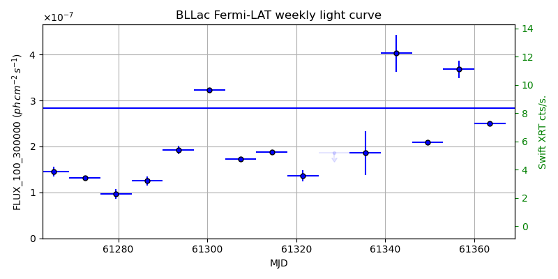
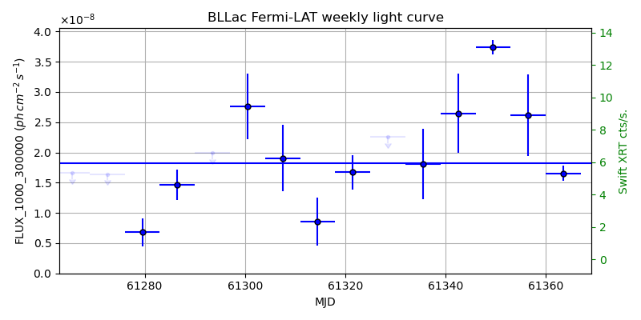

LAT Lightcurve site: https://fermi.gsfc.nasa.gov/ssc/data/access/lat/msl_lc/source/BL_Lac
Swift site: https://www.swift.psu.edu/monitoring/source.php?source=BLLacertae
NED: Query
Time of last update of this page: UT: 2026-11-28 16:28 (MJD: 61372.687)
| Property | Value |
|---|---|
| R.A. | 22:02:43.20 |
| Dec. | 42:16:40.8 |
| z | 0.067 |
| 3FGL SpectrumType | LogParabola |
| 3FGL PL Index | |
| 3FGL Flux_100_300000 | 2.84e-07 1 / (s cm2) |
| 3FGL Flux_1000_300000 | 1.83e-08 1 / (s cm2) |
| 3FGL Flux >200 GeV | 1.47e-11 1 / (s cm2) |
| 3FGL Extrap. Crab >200 GeV | 0.06 |
| 3FGL Flux After EBL Absorption >200GeV | 1.16e-11 1 / (s cm2) |
| 3FGL EBL Crab Fraction >200GeV | 0.05 |
| MJD | dMJD | Flux | dFlux | Frac3FGL | FracCrab>200GeV | EBLFracCrab>200GeV |
|---|---|---|---|---|---|---|
| 61367.50 | 0.50 | 4.86e-07 | 0.00e+00 | 0.00 | 0.00 | 0.00 |
| 61368.50 | 0.50 | 1.76e-07 | 0.00e+00 | 0.00 | 0.00 | 0.00 |
| 61369.50 | 0.50 | 2.29e-07 | 0.00e+00 | 0.00 | 0.00 | 0.00 |
| 61370.50 | 0.50 | 1.71e-07 | 2.09e-08 | 0.60 | 0.04 | 0.03 |
| 61371.50 | 0.50 | 4.10e-07 | 1.08e-07 | 1.44 | 0.09 | 0.07 |

| MJD | dMJD | Flux | dFlux | Frac3FGL | FracCrab>200GeV | EBLFracCrab>200GeV |
|---|---|---|---|---|---|---|
| 61335.50 | 3.50 | 1.86e-07 | 4.80e-08 | 0.66 | 0.04 | 0.03 |
| 61342.50 | 3.50 | 4.03e-07 | 3.99e-08 | 1.42 | 0.09 | 0.07 |
| 61349.50 | 3.50 | 2.09e-07 | 2.29e-09 | 0.74 | 0.05 | 0.04 |
| 61356.50 | 3.50 | 3.68e-07 | 1.90e-08 | 1.30 | 0.08 | 0.06 |
| 61363.50 | 3.50 | 2.50e-07 | 3.24e-09 | 0.88 | 0.05 | 0.04 |

| MJD | dMJD | Flux | dFlux | Frac3FGL | FracCrab>200GeV | EBLFracCrab>200GeV |
|---|---|---|---|---|---|---|
| 61367.50 | 0.50 | 5.36e-08 | 0.00e+00 | 0.00 | 0.00 | 0.00 |
| 61368.50 | 0.50 | 5.10e-08 | 0.00e+00 | 0.00 | 0.00 | 0.00 |
| 61369.50 | 0.50 | 4.98e-08 | 0.00e+00 | 0.00 | 0.00 | 0.00 |
| 61370.50 | 0.50 | 5.21e-08 | 0.00e+00 | 0.00 | 0.00 | 0.00 |
| 61371.50 | 0.50 | 2.43e-08 | 0.00e+00 | 0.00 | 0.00 | 0.00 |

| MJD | dMJD | Flux | dFlux | Frac3FGL | FracCrab>200GeV | EBLFracCrab>200GeV |
|---|---|---|---|---|---|---|
| 61335.50 | 3.50 | 1.81e-08 | 5.79e-09 | 0.99 | 0.06 | 0.05 |
| 61342.50 | 3.50 | 2.65e-08 | 6.51e-09 | 1.45 | 0.09 | 0.07 |
| 61349.50 | 3.50 | 3.74e-08 | 1.21e-09 | 2.05 | 0.13 | 0.10 |
| 61356.50 | 3.50 | 2.61e-08 | 6.75e-09 | 1.43 | 0.09 | 0.07 |
| 61363.50 | 3.50 | 1.66e-08 | 1.21e-09 | 0.91 | 0.06 | 0.05 |
--------------------------------------------------------- Using user-supplied coords: 22:02:43.20 42:16:40.8 2000 --------------------------------------------------------- FLWO UT night of: 2026-11-29 Local Sid. @ Midnight: 04:08 Sunset (-15.0) (local, UT): 18:31 01:31 Sunrise (-15.0) (local, UT): 05:53 12:53 Moonrise (local, UT): 21:57 04:57 Moonset (local, UT): Moon phase: 0.72 --------------------------------------------------------- AzTime LSID UT Obj_el Obj_az Mn_el Mn_az Sep. --------------------------------------------------------- 18:31 22:39 01:31 77.2 329.2 -32.9 32.1 116.4 19:01 23:09 02:01 73.1 314.1 -29.4 38.9 116.6 19:31 23:39 02:31 68.2 306.3 -25.4 45.0 116.7 20:01 00:09 03:01 62.9 302.3 -21.0 50.6 116.9 20:31 00:39 03:31 57.4 300.4 -16.2 55.6 117.1 21:01 01:09 04:01 51.9 299.8 -11.1 60.2 117.2 21:31 01:39 04:31 46.4 300.1 -5.4 64.5 117.4 22:01 02:09 05:01 40.8 300.9 0.4 68.5 117.5 22:31 02:39 05:31 35.4 302.3 5.8 72.2 117.7 23:01 03:10 06:01 30.0 304.0 11.6 75.8 117.8 23:31 03:40 06:31 24.8 306.0 17.5 79.4 117.9 00:01 04:10 07:01 19.7 308.4 23.6 82.9 118.1 00:31 04:40 07:31 14.8 311.1 29.7 86.5 118.2 01:01 05:10 08:01 10.1 314.1 35.8 90.3 118.3 01:31 05:40 08:31 5.7 317.4 42.0 94.4 118.4 02:01 06:10 09:01 1.7 321.1 48.1 99.1 118.6 02:31 06:40 09:31 -1.4 325.1 54.2 104.7 118.7 03:01 07:10 10:01 -5.7 329.4 60.1 111.7 118.8 03:31 07:40 10:31 -9.0 334.1 65.6 121.1 119.0 04:01 08:10 11:01 -11.5 339.1 70.5 134.7 119.1 04:31 08:40 11:31 -13.5 344.4 74.0 154.7 119.2 05:01 09:11 12:01 -14.9 350.0 75.2 181.1 119.4 05:31 09:41 12:31 -15.7 355.6 73.6 206.8 119.5 05:53 10:02 12:53 -15.9 359.8 71.0 221.2 119.6 --------------------------------------------------------- Dark hours >55 deg.: 2.22 srcstart (UT): 2026-11-29 01:31 srcend (UT): 2026-11-29 03:44